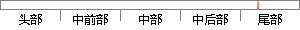

给图片增加阴影效果，让其更加的美观。
降重后句子
为图片添加阴影，使其更漂亮。
片段位置图

相似结果|
相似片段 1：利用工具栏上的上、下、左、右四个移动按钮，可以改变图片与阴影的相对位置，而利用工具栏上的“阴影颜色”按钮．可以为图片阴影添加上漂亮的颜色。当然利用“图片”工具栏．你还可以对图片本身进行设置，改变图片
相似片段 2：必须以右边下顶点作为对齐条件也就是设置 css对齐为 right bottom.如果能接受该种效果的图片阴影，那么就可以不继续了.如果你觉得又顶点和左下顶点阴影效果比较生硬；那么继续添加第二层右上
相似片段 3：控制，产生黑色的底边.纯 css图片阴影效果，这种方法适用于：（1） 图像阴影效果要求不高；（2）网页中有大量图片需要集中处理.该种方法步骤 1. 给所需要添加效果的图片添加一个层 div 标记， 并且
相似片段 4： solid #ccc;该技术的思想： 就是在 img外层包裹 3层 div用来添加组成阴影背景的图片.第一层 添加比较长的右侧和下侧的边框阴影，使用我们制作的第一张图片作为 div的背景层使用，该背景
相似片段 5：（1）在幻灯片第二中央位置插入图片P U23 U .JPG（图片略）。（2）设置图片高度8 .69cm，宽度1S .SUcm，添加阴影样式6，阴影颜色为黑色RGB（U ，U ，U）（3）设置该图片
相似片段 6：了的图片，有点不方便。上传完后（如图2），可以设定图片的尺寸（宽度），选择相片的闪烁、阴影、圆边框、仿古色等效果，下面还提供了很多漂亮的闪图效果供选择。设置过程中，可以看到效果的预览图，满意后，单击“保存
相似片段 7：3、添加图形图片水印本框，置插入点I型指针于文本框内，插入图形或图片。绘制图形可以设置阴影或三维效果锄
|
※ 片段修改建议 ※
近似词参考：- 阴影：暗影
- 漂亮：标致 大度 摩登 时兴 英俊 美丽
系统自动生成语句：为图片添加暗影，使其更标致。
注：本片段修改建议为系统自动生成，仅供参考。